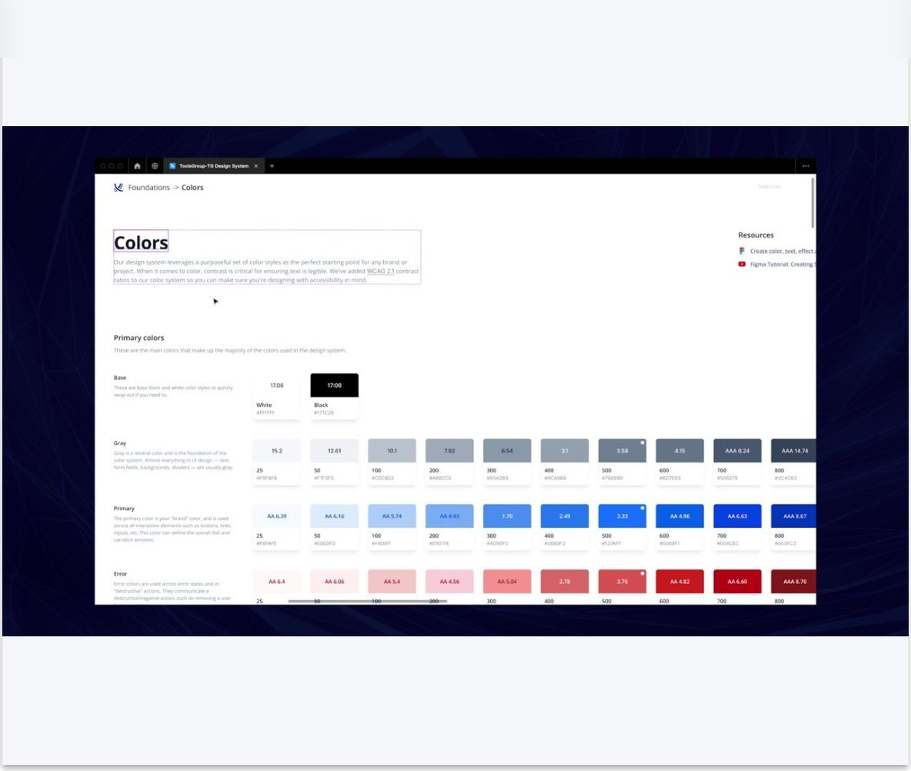
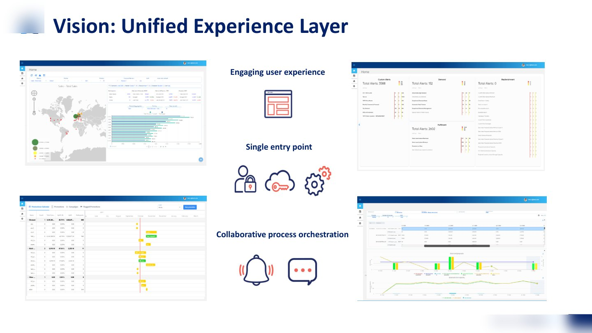
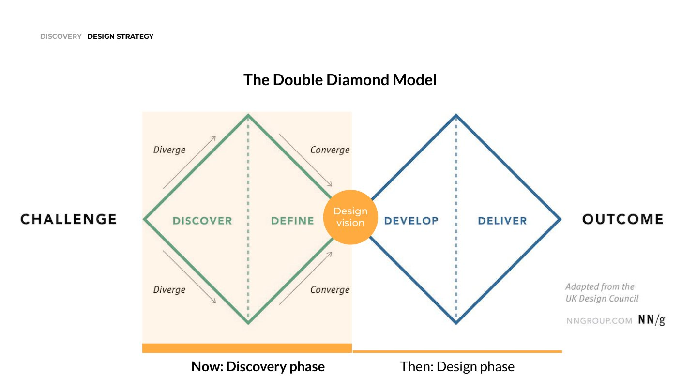
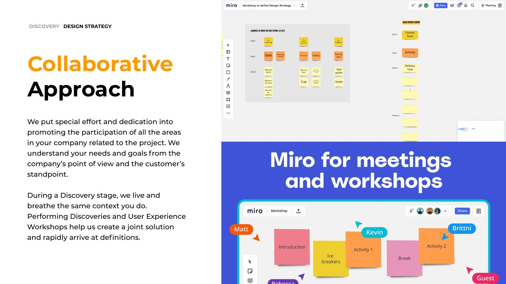
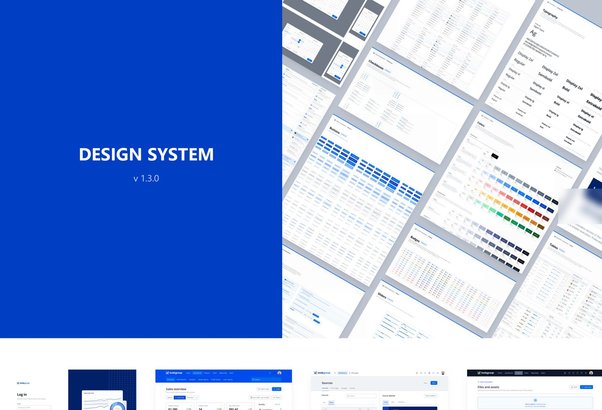

A supply chain and retail planning SaaS had grown into a family of products with inconsistent UX. I led the full design program: discovery, design strategy, and the design team through Discovery, Design, and Hand-Off.

Discovery research fed a design strategy that the team executed end to end. We delivered a unified experience layer as a single entry point across the product family, plus an embedded academy with in-product tutorials so users learn new functionality where they work.
A design system (foundations, components, patterns) prevents the inconsistency from re-emerging as the products evolve.
The program ran as a sequence of documented phases: a discovery kick-off in late 2021, research and workshops, a written design strategy, then a six-month design phase with a team I led: a senior and a middle designer, a project manager, and me as the lead.




"You have been a great value add and taught us a lot. I would recommend these UX design services to my contacts."Client exit interview, August 2022
Client names, process artifacts and outcomes stay within NDA. Ask, and I will walk you through the full case.
Get in touchRequest the case